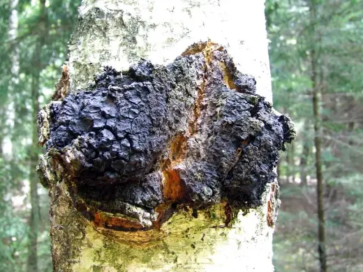
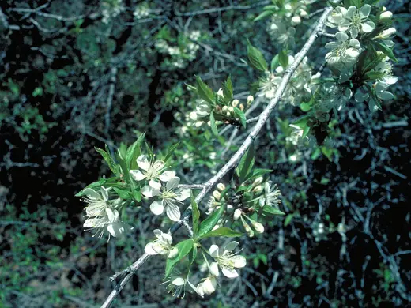
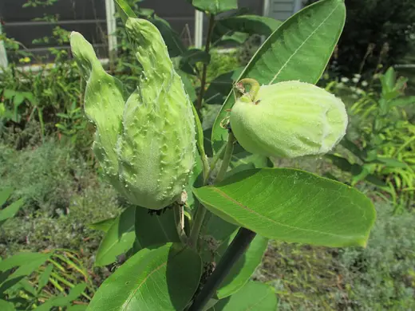
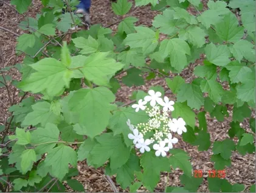
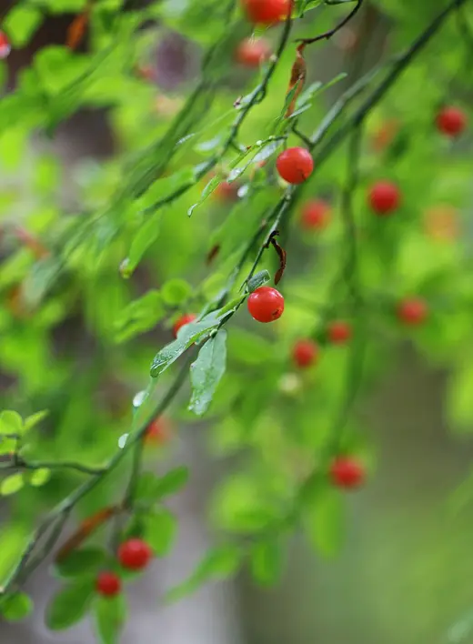
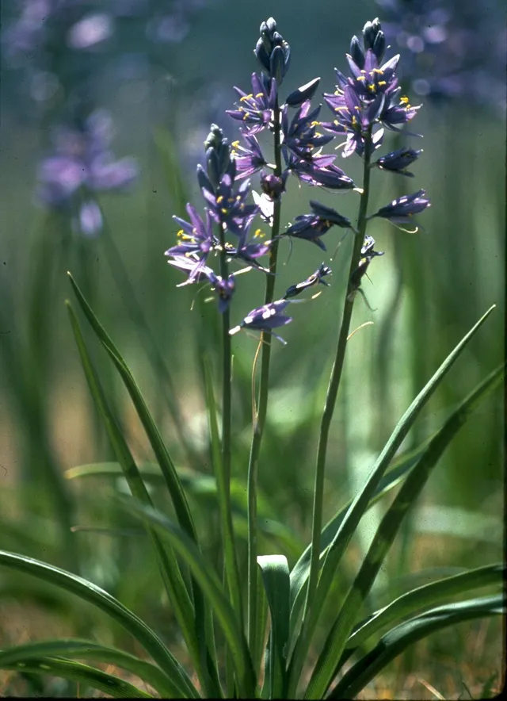
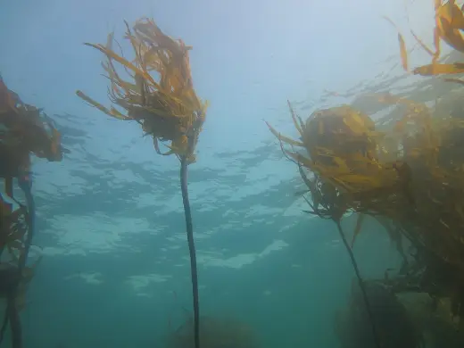
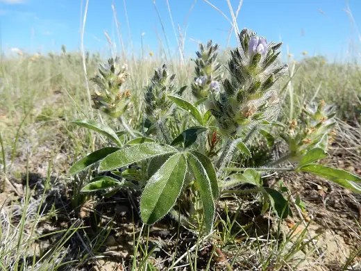
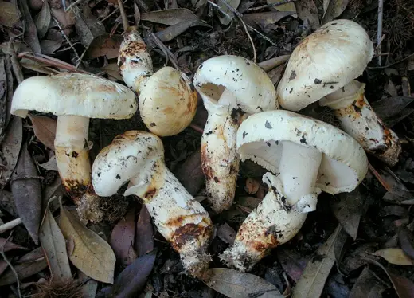
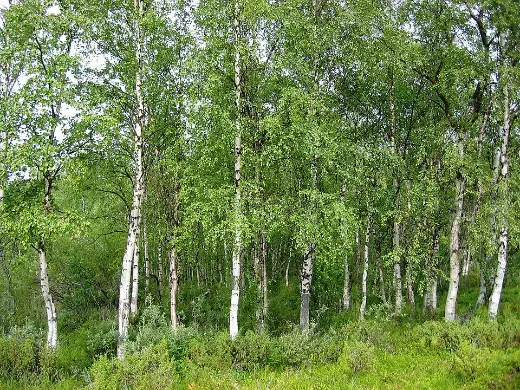

Wild food recipes from Canada
69 dishes made with foraged ingredients, from drinks and preserves to mains and desserts.
Drinks
 Labrador teaLabrador tea
Labrador teaLabrador tea Maple waterMaple sap
Maple waterMaple sap Sumac lemonadeStaghorn sumac
Sumac lemonadeStaghorn sumac Spruce tip syrup sodaSpruce tips
Spruce tip syrup sodaSpruce tips Fireweed jelly teaFireweed
Fireweed jelly teaFireweed
Chaga teaChaga Wild mint teaWild mint
Wild mint teaWild mint White pine needle teaWhite pine needles
White pine needle teaWhite pine needles Anise hyssop teaAnise hyssop
Anise hyssop teaAnise hyssop Rose hip teaRose hips
Rose hip teaRose hips
Pin cherry syrup sodaPin cherry
Starters & snacks
 Fiddleheads with butterOstrich fern fiddleheads
Fiddleheads with butterOstrich fern fiddleheads Pickled rampsRamps
Pickled rampsRamps Chanterelle tourtière bitesChanterelle
Chanterelle tourtière bitesChanterelle Fried morelsMorel
Fried morelsMorel Oysters with mignonetteOysters
Oysters with mignonetteOysters Pan-fried dulseDulse
Pan-fried dulseDulse
Sautéed milkweed podsCommon milkweed Cattail on the cobCattail
Cattail on the cobCattail Steamed periwinkles (wrinkles)Periwinkles
Steamed periwinkles (wrinkles)Periwinkles Razor clam frittersRazor clams
Razor clam frittersRazor clams Sea asparagus saladPickleweed
Sea asparagus saladPickleweed
Sauces, preserves & sides
 Partridgeberry jamLingonberry
Partridgeberry jamLingonberry Cranberry sauceWild cranberry
Cranberry sauceWild cranberry Crab apple jellyCrabapple
Crab apple jellyCrabapple
Pimbina jellyHighbush cranberry Chokecherry syrupChokecherry
Chokecherry syrupChokecherry Balsam fir syrupBalsam fir tips
Balsam fir syrupBalsam fir tips Wild black currant jamWild black currant
Wild black currant jamWild black currant Buffaloberry jellySilver buffaloberry
Buffaloberry jellySilver buffaloberry Black cherry jellyBlack cherry
Black cherry jellyBlack cherry Beach rose hip jellyBeach rose
Beach rose hip jellyBeach rose Wild chive butterWild chives
Wild chive butterWild chives- Pin cherry jellyPin cherry
 Rowan jellyRowan berries
Rowan jellyRowan berries Haskap jamHaskap
Haskap jamHaskap
Red huckleberry jamRed huckleberry- Ramp pestoRamps
Main course
 Wild rice and mushroom pilafWild rice
Wild rice and mushroom pilafWild rice Nettle soupStinging nettle
Nettle soupStinging nettle
Camas pit bakeCamas Porcini and wild rice stuffingPorcini, Wild rice
Porcini and wild rice stuffingPorcini, Wild rice
West Coast seaweed chowderBull kelp PEI musselsBlue mussels
PEI musselsBlue mussels Maritime clam chowderClams
Maritime clam chowderClams- Morel cream sauceMorel
 Lion's mane steaksLion's mane
Lion's mane steaksLion's mane
Prairie turnip stewPrairie turnip
Matsutake ricePine mushroom Lobster mushroom bisqueLobster mushroom
Lobster mushroom bisqueLobster mushroom- Morel and fiddlehead pastaMorel, Ostrich fern fiddleheads

Birch syrup glazed salmonBirch sap Puffball schnitzelGiant puffball
Puffball schnitzelGiant puffball
Breads & baking
 Bannock with saskatoonsServiceberry
Bannock with saskatoonsServiceberry Wild blueberry muffinsWild blueberry
Wild blueberry muffinsWild blueberry- Balsam fir shortbreadBalsam fir tips
Desserts
- Saskatoon berry pieServiceberry
- Blueberry gruntWild blueberry
 Bakeapple jam on toutonsCloudberry
Bakeapple jam on toutonsCloudberry- Maple taffy (tire d'érable)Maple sap
- Pouding chômeur with mapleMaple sap
 Huckleberry crumbleHuckleberry
Huckleberry crumbleHuckleberry Soapberry whip (sxusem)Soapberry
Soapberry whip (sxusem)Soapberry Irish moss puddingIrish moss
Irish moss puddingIrish moss Tarte aux framboisesWild raspberry
Tarte aux framboisesWild raspberry Nannyberry fruit leatherNannyberry
Nannyberry fruit leatherNannyberry- Tarte au sucre with mapleMaple sap
- Haskap ice creamHaskap
 Wild strawberry shortcakeWild strawberry
Wild strawberry shortcakeWild strawberry